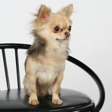

<table border="0" class="layout">
    <tbody style="text-align: left;">
        <tr style="text-align: left;">
            <td valign="top" style="text-align: left;">
                <div class="holster">
                    <div class="block_container s3 b-text b-static-text user_css_12816005438 " id="e_127780584668"></div>
                    
                    <div style="text-align: center;"></div>
                    <div style="text-align: center;">Наши заводчики:</div>                    
                    
                    <div style="text-align: center;"><strong>Заказнова Лада - </strong></div>
                    <div style="text-align: center;"><span style="font-size: 8pt;">добро пожаловать к нам:</span></div>
                    <div style="text-align: center;"><a href="http://choco-barocco.com/"><strong>"Чоко-Барокко"</strong></a></div>
                    <div style="text-align: center;"></div>
                    <div style="text-align: center;"></div>
                    <div style="text-align: center;"></div>
                    <div style="text-align: center;"></div>
                    <div style="text-align: center;"><strong>Игнатьева Ирина- </strong></div>
                    <div style="text-align: center;"><span style="font-size: 8pt;">добро пожаловать к нам:</span></div>
                    <div style="text-align: center;"><a href="http://artsilver-kennel.ru/"><strong>"АРТ СИЛЬВЕР"</strong></a></div>
                    <div style="text-align: center;"></div>
                    <div style="text-align: center;"></div>
                    <div style="text-align: center;"></div>
                    <div style="text-align: center;"></div>
                    
                    
                    <div class="block_container s3 b-image txt-center"></div>
                </div>
            </td>
            <td style="text-align: left;">
                <div class="holster">
                    <div class="block_container s3 b-text b-static-text user_css_12816005438" id="e_128281692843">
                        <p style="text-align: center;"><span style="color: #006600;"><span style="color: #0000ff;"><strong>Чихуахуа</strong></span></span></p>
                        <p style="text-align: justify;"><span style="color: #006600;"><span style="color: #0000ff;"><strong>Из истории породы:</strong> до 1898 года чихуахуа были завезены в США из Мексики, история этой породы практически не известна. Родом ли она из южной Америки, где её предков почитали сначала инки, а потом ацтеки? Или попала в Новый Свет с конквистадорами? Или же завезена туда из Китая в 19 веке? Что-то о предках чихуа хуа можно узнать по барельефам эпохи тольтеков в одном из мексиканских храмов, по останкам маленьких собак, найденным при археологических раскопках в той же Мексике, и по записям о миниатюрной породе вроде китайской хохлатой собаки, попавшей в Америку из Азии. Скорее всего чихуахуа - результат скрещивания каких-то древних и относительно современных пород. Существуют две разновидности породы - длинношерстная и короткошерстная. Современная длинношерстная разновидность могла возникнуть в результате скрещивания короткошерстной чихуахуа с другими миниатюрными собаками, например с папильоном, померанским шпицем и йоркшир-терьером.</span></span></p>
                        <p style="text-align: justify;"><span style="color: #006600;"><span style="color: #0000ff;"><strong>Общая характеристика:</strong> весёлая, активная со смелым и любопытным характером собака. Очень любит детей, общительна, ласкова, хорошо уживается и ладит с другими животными. Обладают уравновешенным темпераментом дрессируется. Чуткие.</span></span></p>
                        <p style="text-align: justify;"><span style="color: #006600;"><span style="color: #0000ff;"><strong>Содержание и уход: </strong>вопреки создающемуся впечатлению чихуахуа готова гулять столько, сколько выдержит сам хозяин, хотя она и не прочь иногда попутешествовать в хозяйственной сумке. Они не любят холода и зимой их нужно выводить гулять в попонке. Умеренные потребности делают её идеальным спутником для пожилых людей. Этих собак вычёсывают мягкой щёткой. Неплохо также протирать их специальной рукавицей, чтобы шерсть блестела. Когти необходимо периодически подрезать, а уши - очищать от пыли.</span></span></p>
                        <p style="text-align: justify;"><span style="color: #006600;"><span style="color: #0000ff;">&nbsp;</span></span><span style="color: #0000ff;"><strong>РАЗМЕР И ВЕС</strong>: В этой породе учитывается вес, но не размер. <br />Вес: Идеальный  вес: от 1,5до 3 кг. <br />Собаки, весящие меньше 500 гр. и больше чем 3 кг должны  быть дисквалифицированы.</span></p>
                        <p style="text-align: justify;"><span style="color: #006600;"><span style="color: #0000ff;">___________________________________</span></span></p>
                    </div>
                </div>
            </td>
        </tr>
    </tbody>
</table>​
